Создание Нового подключения (НП)
1. Перейти в раздел Пользователи - Список пользователей - Добавить пользователя
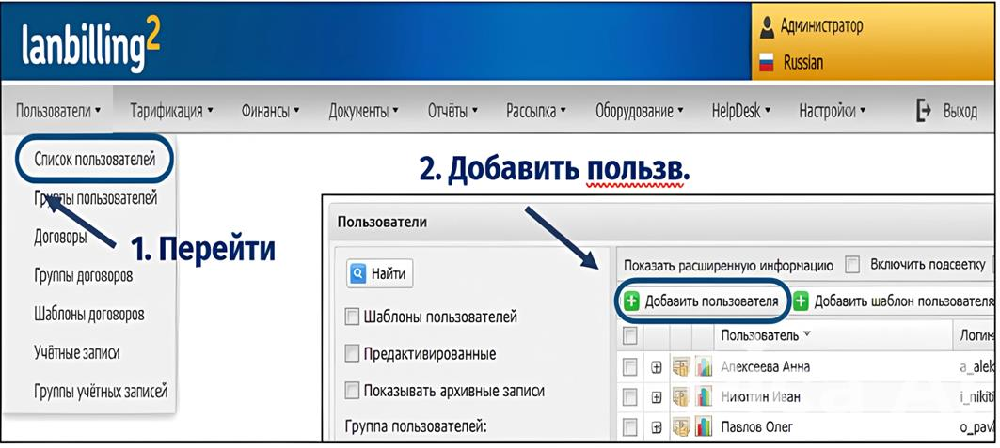
2. Заполнить поля 1, 2, Паспортные данные и Сохранить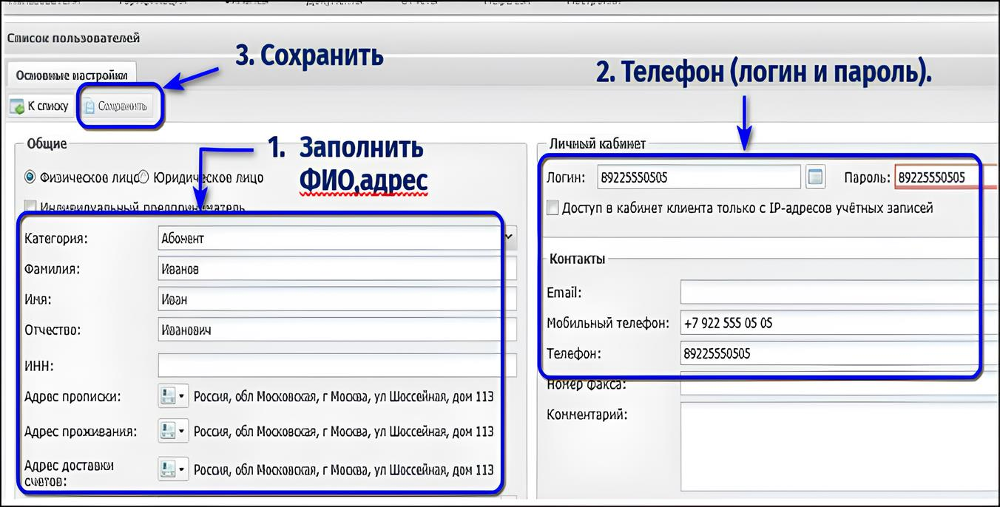
3.Создаем новый договор. Нажимаем - Добавить договор. Выбрать значения из списков и Сохранить.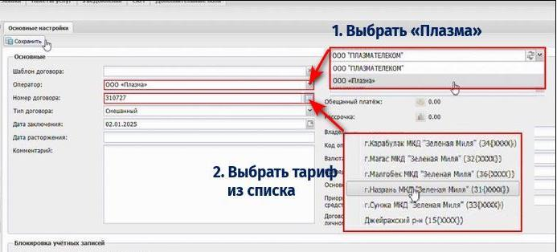
4.Создаём Учётную запись. Нажимаем - Добавить учётную запись.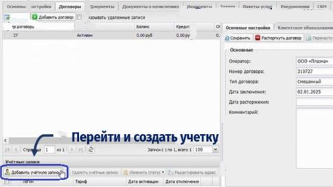
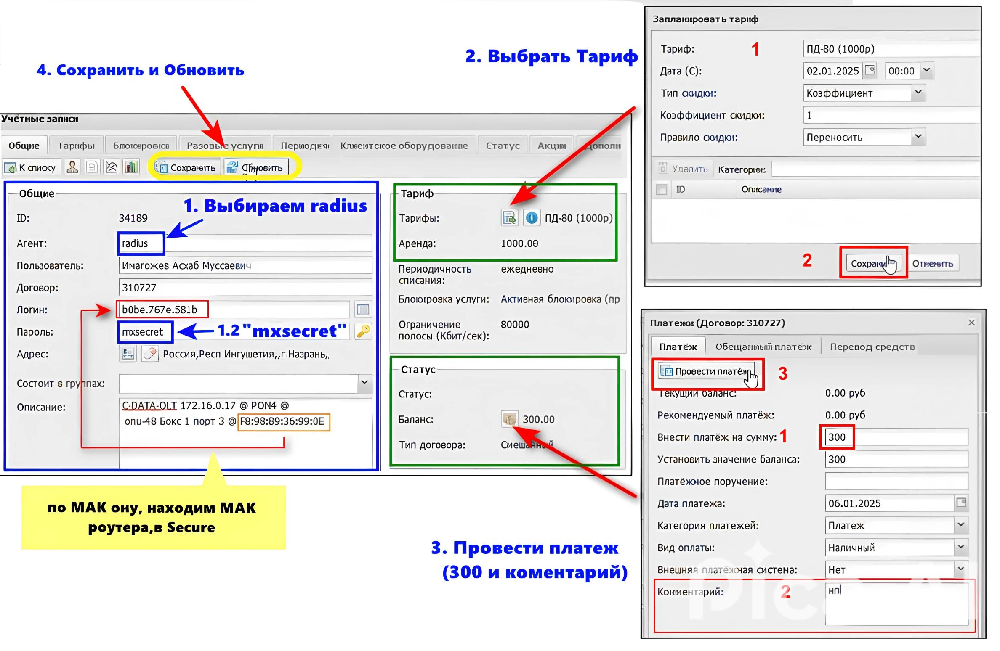
5. Далее зайти в Блокировки.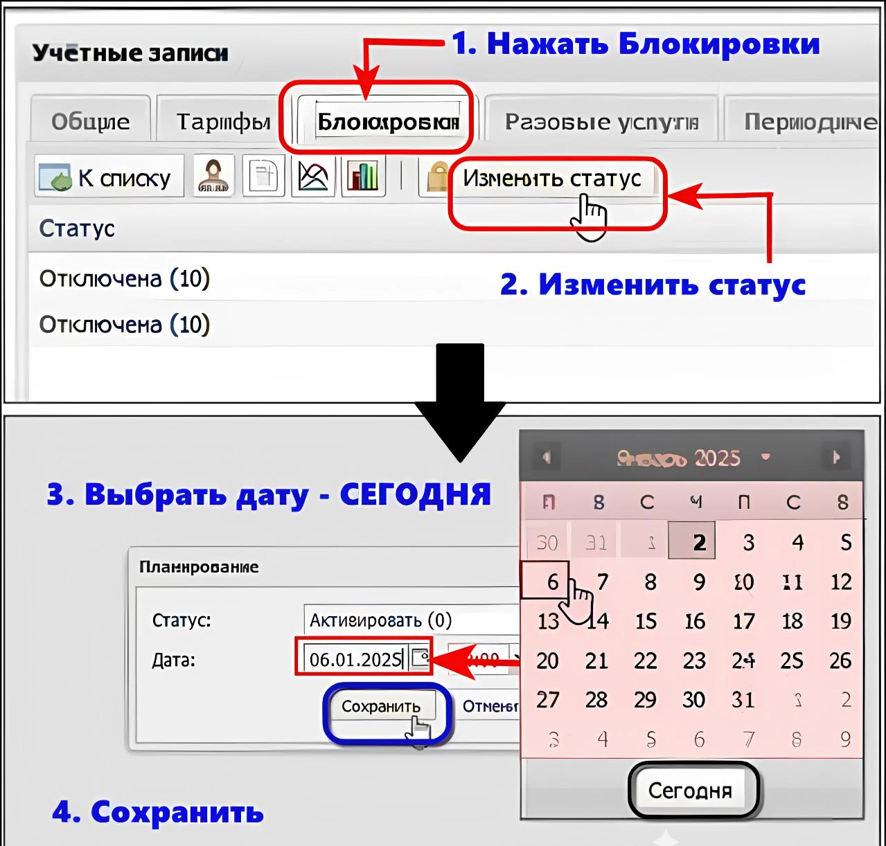
6. Сохранить и Обновить.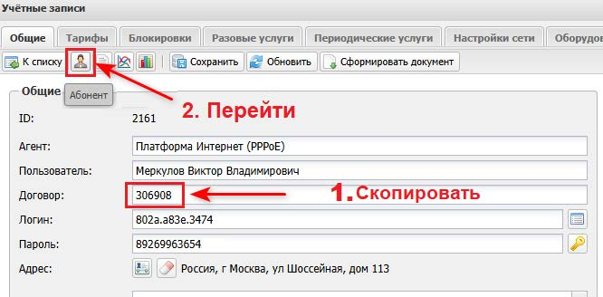
7. Вставить скопированный Логин (из Общие) в поле Логин (учетной записи).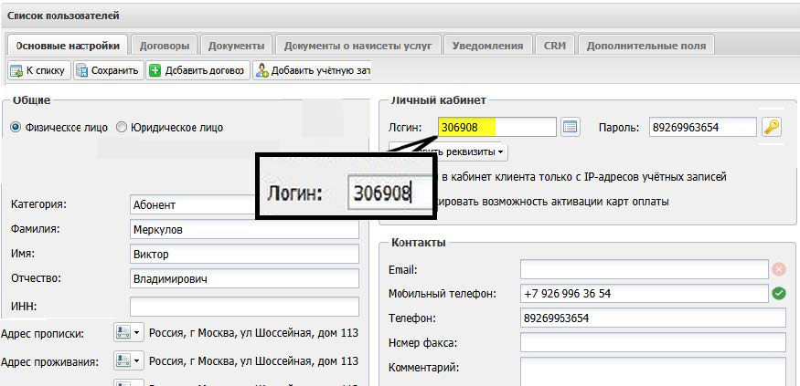
8. Копируем Логин (МАК роутера) – Переходим в Отчеты – Активные сессии.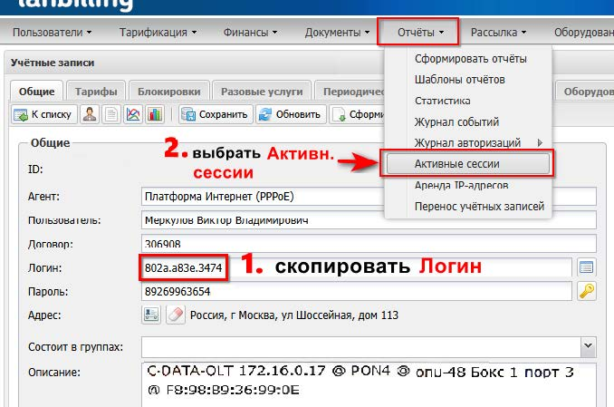
9.Выбираем параметры – Ставим Логин в поле – Найти.10.Должна появиться сессия.
Создание Нового подключения - Radio
1Создаем нового абонента, затем договор и учетную запись (см.пред.главу)
2 В учетке, где поле – Логин, пишем MAC-адрес антенны (WLAN0 MAC)
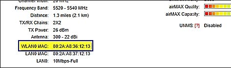
3. Скопировать MAC-адрес антенны из поля Логин (в учетной записи), перейти в Отчеты > Активные сессии4. Скопировать IPv4 – адрес, вставить в браузер, и перейти в настройки антенны.
5. В настройках антенны, в разделе SYSTEM, в поле Device Name вставить новый номер договора (IF-******). Нажать Change.
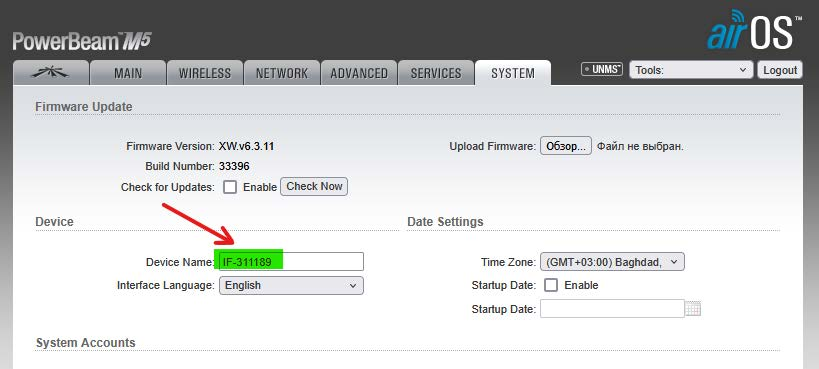
6. Перейти в раздел WIRELESS. В поле SSID, нажать Select. Выбрать наиболее хороший сигнал (AIRL – до 62)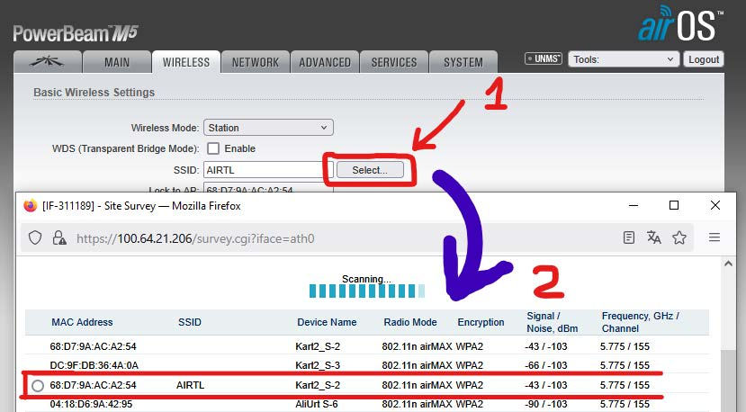
7. Нажать Lock to AP > Затем Change > Затем вверху – Apply.8. В разделе MAIN, скопировать имя антены (Device Model) «PBeam M5 300», и вставить имя антенны в описание учетки.
В настройках антенны, перейти на AP Information (внизу 2 вкладка), и скопировать название сектора антенны (Device Name) NZR-MTS_S-1, и вставить в описание учетки.